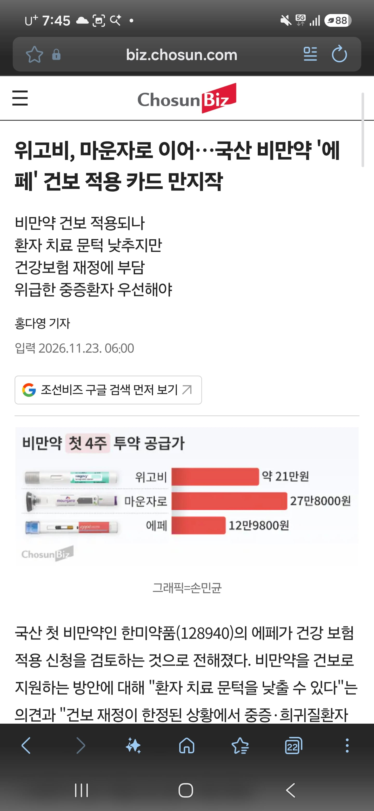

약효도 안나오면서 가격 경쟁력도 없는거 왜 이악물고 계속 비싸게 파나 했더니 건보재정이 목적이었음 ㅋㅋㅋㅋㅋㅋㅋㅋㅋ

약효도 안나오면서 가격 경쟁력도 없는거 왜 이악물고 계속 비싸게 파나 했더니 건보재정이 목적이었음 ㅋㅋㅋㅋㅋㅋㅋㅋㅋ
이론상 마운자로 3단계 효과보려면 에페 최고 단계를 꼽아야 하는데
그럼 굳이 에페를 맞을 이유가 없음 ㅋㅋㅋㅋㅋㅋ
난그냥 스시자로 사올래.
비만이라는게 미용 문제로 착각해서 그렇지 당뇨와 밀접한 대사질환이라는 관점에서 보긴 해야할 듯
물파는데 건보재정 캬
이 악물고 계속 밀어대네
외화 유출 오짐
한미가 뭔짓을 했는지 모르지만 (합리적 추정은 가능) 정부가 외국비만약 회사랑 약값 협상을 안함
해외원정 뛰어도 훨씬 저렴하니까 사람들이 일본으로 원정뜀 -> 일본은 스시자로 덕분에 관광산업 호황 ㅋㅋㅋ
원래 건보에 안들어 오는 약은 정부의 약가 협상 대상이 아님.
정부 돈이 들어가니까 가격에 손댈 명분도 있는거지
돈 한푼 안들이면서 얼마에 팔아라 할 수 있는 그런 시스템이 아니니까
건보에 들어가면 약을 싸게 팔아도 더 많이 팔수 있으니까
너무 후려치는거 아니면 싸게 주더라도 더 많이 팔아서 오히려 제약사에 이득임.
그래서인지 마운자로도 신청은 되어있다고 함.
건보에서 협상해서 가격 낮추면
거기에 정부가 건보 포함해서 해당되는 사람은 더 싸게 살수 있고
비급여로 사도 협상한 가격이라 싸게 살수 있게됨. (일본 상황)
그럼 마운자로 가격 내리는 시발점이긴 하네
마운자로가 국내에서 철수 할지도 모르지 ㅋㅋ
한국 건보는 약가 협상을 잘? 함.
너무 심하게 후려쳐서 필수 의약품이 철수한 적도 있었지.
소아 심장 인공 혈관인가? 그건 아직도 안들어온다고 함.
에페땜에 그정돈 못할텐데
그건 어떻게 될지 모르지.
일단 모두 GLP-1에 붙는 성분들이지만
에페, 마운자로, 위고비는 다 성분이 달라.
같은 가격으로 협상하지는 않을 것 같음.
그리고 소아 심장 인공 혈관은 그거 없이 소아 심장 수술 못한다는데
찐빠내서 아직도 필요하면 정부가 몇개씩 주변 나라에서 사와서 병원에 나눠준다는데
그런 병신 짓을 또 안할 거라고 생각하긴 어려움.
뭘 자꾸 만지작대
커져버렸어..
제대로 만들던가
요약 ) 구리고 비싼약 세금으로 물타서 팔아먹겠다
그럼 결국 세금 삥뜯기잖아
일본갈때 3~4백 드는데 스시자로로 절반 페이백 받으니 개이득
진짜 같은 비만약인데 한국만 비싼데 ㅅㅂ 아무것도 안하는거봐 진짜 누가 헤쳐먹고 있는지 에휴